Amazon Bestselling Books
Table of contents
*분석 대상 데이터셋: Amazon Bestselling Books
- 데이터셋 출처
- 2009년 ~ 2019년의 Amazon’s Top 50 bestselling books 데이터 (11년 * 50 = 550권)
- 한 책이 여러 해에 걸친 bestseller였다면, 여러 번 중복되어 포함되어 있음 (중복을 제외하고 계산하면 총 351권)
- 같은 책이여도 User Rating, Price, Reviews 정보가 달라지는 경우도 있음
- Columns (7개): ‘Name’, ‘Author’, ‘User Rating’, ‘Reviews’, ‘Price’, ‘Year’, ‘Genre’
데이터 파악
# 필요한 라이브러리 import
import pandas as pd
import numpy as np
from matplotlib import pyplot as plt
import seaborn as sns
import scipy.stats as stats
books_df = pd.read_csv('data/bestsellers with categories.csv')
books_df.head()
| Name | Author | User Rating | Reviews | Price | Year | Genre | |
|---|---|---|---|---|---|---|---|
| 0 | 10-Day Green Smoothie Cleanse | JJ Smith | 4.7 | 17350 | 8 | 2016 | Non Fiction |
| 1 | 11/22/63: A Novel | Stephen King | 4.6 | 2052 | 22 | 2011 | Fiction |
| 2 | 12 Rules for Life: An Antidote to Chaos | Jordan B. Peterson | 4.7 | 18979 | 15 | 2018 | Non Fiction |
| 3 | 1984 (Signet Classics) | George Orwell | 4.7 | 21424 | 6 | 2017 | Fiction |
| 4 | 5,000 Awesome Facts (About Everything!) (National Geographic Kids) | National Geographic Kids | 4.8 | 7665 | 12 | 2019 | Non Fiction |
값의 분포 확인
-
null값 여부, data type 확인
books_df.info()<class 'pandas.core.frame.DataFrame'> RangeIndex: 550 entries, 0 to 549 Data columns (total 7 columns): # Column Non-Null Count Dtype --- ------ -------------- ----- 0 Name 550 non-null object 1 Author 550 non-null object 2 User Rating 550 non-null float64 3 Reviews 550 non-null int64 4 Price 550 non-null int64 5 Year 550 non-null int64 6 Genre 550 non-null object dtypes: float64(1), int64(3), object(3) memory usage: 30.2+ KB -
숫자형 컬럼: 값의 분포를 확인
books_df[['User Rating', 'Reviews', 'Price']].describe()User Rating Reviews Price count 550.00 550.00 550.00 mean 4.62 11953.28 13.10 std 0.23 11731.13 10.84 min 3.30 37.00 0.00 25% 4.50 4058.00 7.00 50% 4.70 8580.00 11.00 75% 4.80 17253.25 16.00 max 4.90 87841.00 105.00 - Price의 최솟값이 0 → bestselling books 명단이므로 실제 가격이 0일리는 없다고 생각. (가격이 0 = 사은품이라고 간주할 수 있는데, 그렇다면 bestselling 명단에 올리지 않았을 것.)
-
unique한 값 수 확인
books_df.nunique()Name 351 Author 248 User Rating 14 Reviews 346 Price 40 Year 11 Genre 2 dtype: int64
데이터 사전 처리
- Price 컬럼의 0값 채워주기
- bestselling books 명단이므로 Price가 0일리는 없다고 생각. → 0인 값은 아마 조사 과정에서 누락된 것이라 생각됨
- 0값 = 결측치로 간주하고, 해당 책이 속한 연도 & 장르의 Price 평균값으로 채워넣어준다
books_df[books_df['Price'] == 0] # Price가 0인 row: 총 12개Name Author User Rating Reviews Price Year Genre 42 Cabin Fever (Diary of a Wimpy Kid, Book 6) Jeff Kinney 4.8 4505 0 2011 Fiction 71 Diary of a Wimpy Kid: Hard Luck, Book 8 Jeff Kinney 4.8 6812 0 2013 Fiction 116 Frozen (Little Golden Book) RH Disney 4.7 3642 0 2014 Fiction 193 JOURNEY TO THE ICE P RH Disney 4.6 978 0 2014 Fiction 219 Little Blue Truck Alice Schertle 4.9 1884 0 2014 Fiction 358 The Constitution of the United States Delegates of the Constitutional 4.8 2774 0 2016 Non Fiction 381 The Getaway Jeff Kinney 4.8 5836 0 2017 Fiction 461 The Short Second Life of Bree Tanner: An Eclipse Novella (The Twilight Saga) Stephenie Meyer 4.6 2122 0 2010 Fiction 505 To Kill a Mockingbird Harper Lee 4.8 26234 0 2013 Fiction 506 To Kill a Mockingbird Harper Lee 4.8 26234 0 2014 Fiction 507 To Kill a Mockingbird Harper Lee 4.8 26234 0 2015 Fiction 508 To Kill a Mockingbird Harper Lee 4.8 26234 0 2016 Fiction → 0값(결측치로 간주) 처리: 해당 책이 속한 연도 & 장르의 Price 평균값으로 대체
zero_price_index = books_df[books_df['Price'] == 0].index for index in zero_price_index: year = books_df.loc[index, 'Year'] genre = books_df.loc[index, 'Genre'] avg_price = books_df[(books_df['Genre'] == genre) & (books_df['Year'] == year)]['Price'].mean() books_df.loc[index, 'Price'] = avg_price books_df.loc[zero_price_index]Name Author User Rating Reviews Price Year Genre 42 Cabin Fever (Diary of a Wimpy Kid, Book 6) Jeff Kinney 4.8 4505 11.619 2011 Fiction 71 Diary of a Wimpy Kid: Hard Luck, Book 8 Jeff Kinney 4.8 6812 10.7083 2013 Fiction 116 Frozen (Little Golden Book) RH Disney 4.7 3642 10.1724 2014 Fiction 193 JOURNEY TO THE ICE P RH Disney 4.6 978 10.5232 2014 Fiction 219 Little Blue Truck Alice Schertle 4.9 1884 10.8861 2014 Fiction 358 The Constitution of the United States Delegates of the Constitutional 4.8 2774 13.5161 2016 Non Fiction 381 The Getaway Jeff Kinney 4.8 5836 8.83333 2017 Fiction 461 The Short Second Life of Bree Tanner: An Eclipse Novella (The Twilight Saga) Stephenie Meyer 4.6 2122 9.7 2010 Fiction 505 To Kill a Mockingbird Harper Lee 4.8 26234 11.1545 2013 Fiction 506 To Kill a Mockingbird Harper Lee 4.8 26234 11.2614 2014 Fiction 507 To Kill a Mockingbird Harper Lee 4.8 26234 9.35294 2015 Fiction 508 To Kill a Mockingbird Harper Lee 4.8 26234 12.6316 2016 Fiction - string 데이터 처리
- Name과 Author의 경우, 앞 뒤 공백 때문에 다르게 인식될 가능성을 없애기 위해 strip()을 해준다
books_df['Name'] = books_df['Name'].str.strip() books_df['Author'] = books_df['Author'].str.strip()
중복값 확인
- 중복값 확인
# 모든 열이 중복된 값이 포함되어 있나 확인 books_df.duplicated().sum()0 -
같은 책이 여러 번 나온 경우도 확인
# 제목과 작가만 중복되는 값이 몇 개인지 체크 books_df.duplicated(subset=['Name', 'Author']).sum()199 -
같은 책이면 User Rating, Price, Reviews 정보가 같은지 확인
nunique_df = books_df.groupby(['Name'])[['User Rating', 'Price', 'Reviews', 'Year']].nunique().reset_index() nunique_df[(nunique_df['User Rating'] > 1) | (nunique_df['Price'] > 1) | (nunique_df['Reviews'] > 1)]Name User Rating Price Reviews Year 104 Gone Girl 1 2 1 3 193 Quiet: The Power of Introverts in a World That Can’t Stop Talking 1 2 1 2 219 The 7 Habits of Highly Effective People: Powerful Lessons in Personal Change 2 2 2 7 240 The Fault in Our Stars 1 2 1 3 248 The Girl on the Train 1 2 1 2 258 The Help 1 3 1 3 263 The Immortal Life of Henrietta Lacks 1 2 1 3 322 To Kill a Mockingbird 1 5 1 5 328 Unbroken: A World War II Story of Survival, Resilience, and Redemption 1 2 1 4 - 같은 책이여도 해에 따라 User Rating, Price, Reviews 정보가 달라지는 경우도 있음
(To Kill a Mockingbird는 내가 임의로 Price를 채워넣었으므로 제외)
- 같은 책이여도 해에 따라 User Rating, Price, Reviews 정보가 달라지는 경우도 있음
책별 bestselling 횟수 비교
: 각 책별로, 몇 번 bestseller에 이름을 올렸는지 횟수를 계산
yearly_count = books_df.groupby(['Name', 'Genre', 'Author'])[['Year']].count().reset_index()
yearly_count.sort_values(by='Year', ascending=False, inplace=True)
yearly_count.head()
| Name | Genre | Author | Year | |
|---|---|---|---|---|
| 191 | Publication Manual of the American Psychological Association, 6th Edition | Non Fiction | American Psychological Association | 10 |
| 209 | StrengthsFinder 2.0 | Non Fiction | Gallup | 9 |
| 178 | Oh, the Places You’ll Go! | Fiction | Dr. Seuss | 8 |
| 310 | The Very Hungry Caterpillar | Fiction | Eric Carle | 7 |
| 219 | The 7 Habits of Highly Effective People: Powerful Lessons in Personal Change | Non Fiction | Stephen R. Covey | 7 |
bestselling 횟수 분포 확인
-
최댓값, 최솟값, 사분위값 확인
print(yearly_count.describe())Year count 351.000000 mean 1.566952 std 1.271868 min 1.000000 25% 1.000000 50% 1.000000 75% 2.000000 max 10.000000 - 분포 시각화
plt.figure(figsize=(6, 4)) sns.countplot(data=yearly_count, x='Year', palette='Purples_r');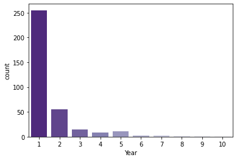
- 한 번만 포함된 비율 확인
one_year_percentage = len(yearly_count[yearly_count['Year'] == 1]) / len(yearly_count) * 100 print(f'한 해만 bestseller에 포함된 책의 비율: {one_year_percentage :.0f}%')한 해만 bestseller에 포함된 책의 비율: 73%
>> 최대 10번이나 bestseller에 포함된 책도 있지만, 보통은 1~2번 bestseller에 포함되는 정도가 일반적.
(73%가 1번만 이름을 올림)
bestselling 횟수가 많은 책 확인
-
Top 10 책 시각화: 가장 많이 bestseller에 올라온 책이 어떤 것인지
plt.figure(figsize=(6, 5)) sns.barplot(data=yearly_count.head(10), x='Year', y='Name', hue='Genre', palette='Purples');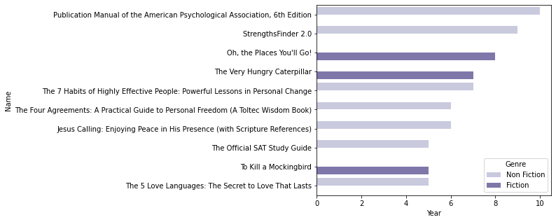
- 가장 많이 bestseller에 포함된 책 10권 중 7권은 Non-Fiction
-
bestseller에 많이 올라온 책들의 연도별 bestselling 여부를 확인
pivot_df = pd.pivot_table(books_df, index='Name', columns='Year', values='Author', fill_value=0, aggfunc='count').reset_index() pd.merge(pivot_df, yearly_count, on='Name').sort_values(by='Year', ascending=False).head(10)
| Name | 2009 | 2010 | 2011 | 2012 | 2013 | 2014 | 2015 | 2016 | 2017 | 2018 | 2019 | Genre | Author | Year | |
|---|---|---|---|---|---|---|---|---|---|---|---|---|---|---|---|
| 191 | Publication Manual of the American Psychological Association, 6th Edition | 1 | 1 | 1 | 1 | 1 | 1 | 1 | 1 | 1 | 1 | 0 | Non Fiction | American Psychological Association | 10 |
| 209 | StrengthsFinder 2.0 | 1 | 1 | 1 | 1 | 1 | 1 | 1 | 1 | 1 | 0 | 0 | Non Fiction | Gallup | 9 |
| 178 | Oh, the Places You’ll Go! | 0 | 0 | 0 | 1 | 1 | 1 | 1 | 1 | 1 | 1 | 1 | Fiction | Dr. Seuss | 8 |
| 310 | The Very Hungry Caterpillar | 0 | 0 | 0 | 0 | 1 | 1 | 1 | 1 | 1 | 1 | 1 | Fiction | Eric Carle | 7 |
| 219 | The 7 Habits of Highly Effective People: Powerful Lessons in Personal Change | 1 | 0 | 1 | 1 | 1 | 0 | 1 | 1 | 1 | 0 | 0 | Non Fiction | Stephen R. Covey | 7 |
| 243 | The Four Agreements: A Practical Guide to Personal Freedom (A Toltec Wisdom Book) | 0 | 0 | 0 | 0 | 1 | 0 | 1 | 1 | 1 | 1 | 1 | Non Fiction | Don Miguel Ruiz | 6 |
| 140 | Jesus Calling: Enjoying Peace in His Presence (with Scripture References) | 0 | 0 | 1 | 1 | 1 | 1 | 1 | 1 | 0 | 0 | 0 | Non Fiction | Sarah Young | 6 |
| 281 | The Official SAT Study Guide | 0 | 1 | 1 | 1 | 1 | 1 | 0 | 0 | 0 | 0 | 0 | Non Fiction | The College Board | 5 |
| 322 | To Kill a Mockingbird | 0 | 0 | 0 | 0 | 1 | 1 | 1 | 1 | 0 | 0 | 1 | Fiction | Harper Lee | 5 |
| 216 | The 5 Love Languages: The Secret to Love That Lasts | 0 | 1 | 1 | 1 | 1 | 1 | 0 | 0 | 0 | 0 | 0 | Non Fiction | Gary Chapman | 5 |
- 연속으로 계속 bestseller에 올라온 경우만 있는 건 아니고, bestseller에 올라오지 않은 해가 중간에 끼어 있는 책들도 존재함 (ex. To Kill a Mockingbird)
책별 bestselling 횟수 비교
작가명 표기 확인
: 같은 작가인데 이름이 다르게 표기된 경우가 있는지 확인
books_df['Author'].nunique() ## 작가명 표기를 정리하기 전에는 중복 제외하고 248개
248
-
각 작가의 성(공백 기준으로 가장 뒷부분만 추출)만 분리해서 별도의 df로 저장
books_df_copy = books_df[['Name', 'Author']] books_df_copy['Author_Last_Name'] = books_df_copy ['Author'].str.rsplit(n=1, expand=True)[1] books_df_copy.head()Name Author Author_Last_Name 0 10-Day Green Smoothie Cleanse JJ Smith Smith 1 11/22/63: A Novel Stephen King King 2 12 Rules for Life: An Antidote to Chaos Jordan B. Peterson Peterson 3 1984 (Signet Classics) George Orwell Orwell 4 5,000 Awesome Facts (About Everything!) (National Geographic Kids) National Geographic Kids Kids -
같은 성에 2개 이상의 작가명이 존재하는 경우만 따로 저장
authors_unique_df = books_df_copy.groupby(['Author_Last_Name'])[['Author']].nunique().reset_index() authors_unique_df[authors_unique_df['Author'] > 1]Author_Last_Name Author 5 Association 2 20 Brown 4 26 Campbell 2 39 Collins 2 63 Gaines 2 121 M.D. 3 122 MD 3 125 Martin 3 164 Press 2 175 Roth 2 176 Rowling 2 191 Smith 3 221 Young 2 -
last name이 2개 이상으로 나온 Author 이름만 알파벳 순으로 뽑아서 확인 (같은 작가인데 표기가 다른 경우가 있는지)
last_name_list = list(authors_unique_df[authors_unique_df['Author'] > 1]['Author_Last_Name']) sorted(books_df_copy[books_df_copy['Author_Last_Name'].isin(last_name_list)]['Author'].unique())['American Psychiatric Association', 'American Psychological Association', 'Bessel van der Kolk M.D.', 'Brené Brown', 'Chip Gaines', 'Craig Smith', 'Dan Brown', 'Daniel James Brown', 'David Perlmutter MD', 'Dr. Steven R Gundry MD', 'Emily Winfield Martin', 'Geneen Roth', 'George R. R. Martin', 'George R.R. Martin', 'Ian K. Smith M.D.', 'J. K. Rowling', 'J.K. Rowling', 'JJ Smith', 'Jennifer Smith', 'Jim Collins', 'Joanna Gaines', 'Joel Fuhrman MD', 'Margaret Wise Brown', 'Mark Hyman M.D.', 'Paper Peony Press', 'Pretty Simple Press', 'Rod Campbell', 'Sarah Young', 'Suzanne Collins', 'Thomas Campbell', 'Veronica Roth', 'William P. Young'] -
공백 처리로 인해 다르게 인식되는 작가명을 수정해줌
# J.K.Rowling과 George R.R.Martin의 경우, 중간 공백으로 인해 다르게 표기된 경우가 있음 → 수정해줌 books_df.replace({'Author': {'J.K. Rowling': 'J. K. Rowling', 'George R.R. Martin': 'George R. R. Martin'}}, inplace=True)→ 중복 제외 작가 수가 246명으로 줄어듦:
books_df['Author'].nunique()246
bestselling 횟수 분포 확인
yearly_count2 = books_df.groupby(['Author'])[['Year']].count().reset_index()
yearly_count2.sort_values(by='Year', ascending=False, inplace=True)
yearly_count2.head()
| Author | Year | |
|---|---|---|
| 118 | Jeff Kinney | 12 |
| 224 | Suzanne Collins | 11 |
| 195 | Rick Riordan | 11 |
| 92 | Gary Chapman | 11 |
| 11 | American Psychological Association | 10 |
- 최댓값, 최솟값, 사분위값 확인
print(yearly_count2.describe())Year count 246.000000 mean 2.235772 std 2.080350 min 1.000000 25% 1.000000 50% 1.000000 75% 2.000000 max 12.000000 - 분포 시각화
plt.figure(figsize=(6, 4)) sns.countplot(data=yearly_count2, x='Year', palette='Purples_r');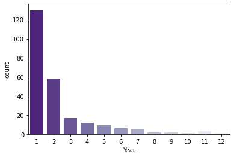
- 1~2번 포함된 비율 확인
one_year_percentage2 = len(yearly_count2[yearly_count2['Year'] == 1]) / len(yearly_count2) * 100 print(f'한 해만 bestseller에 포함된 작가의 비율: {one_year_percentage2 :.0f}%') one_year_percentage2_2 = len(yearly_count2[yearly_count2['Year'] == 2]) / len(yearly_count2) * 100 print(f'두 해 동안 bestseller에 포함된 작가의 비율: {one_year_percentage2_2 :.0f}%')한 해만 bestseller에 포함된 작가의 비율: 53% 두 해 동안 bestseller에 포함된 작가의 비율: 24%>> 최대 12번이나 bestseller에 포함된 작가도 있지만, 보통은 1~2번 bestseller에 포함되는 정도가 일반적.
(과반수가 1번만 이름을 올렸고, 77%가 2번 이하로 이름을 올림)
bestselling 횟수가 많은 작가 확인
-
Top 10 작가 시각화: 가장 많이 bestseller에 올라온 작가가 누구인지
plt.figure(figsize=(6, 5)) sns.barplot(data=yearly_count2.head(10), x='Year', y='Author', palette='Purples_r');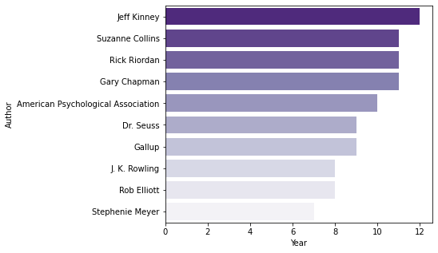
- 유명한 시리즈물을 발표한 작가들이 주로 상위권에 포진.
- Jeff Kinney: Diary of a Wimpy Kids 시리즈
- Suzanne Collins: The Hunger Game 시리즈
- Rick Riordan: The Heroes of Olympus & The Kane Chronicles 시리즈
- J. K. Rowling: Harry Potter 시리즈
- Stephenie Meyer: Twilight 시리즈
- 유명한 시리즈물을 발표한 작가들이 주로 상위권에 포진.
-
bestseller에 많이 올라온 작가들의 연도별 bestselling 분포를 확인
pivot_df2 = pd.pivot_table(books_df, index='Author', columns='Year', values='Name', fill_value=0, aggfunc='count').reset_index() pd.merge(pivot_df2, yearly_count2, on='Author').sort_values(by='Year', ascending=False).head(10)Author 2009 2010 2011 2012 2013 2014 2015 2016 2017 2018 2019 Year 118 Jeff Kinney 2 1 1 1 1 1 1 1 1 1 1 12 224 Suzanne Collins 0 3 4 4 0 0 0 0 0 0 0 11 195 Rick Riordan 1 4 2 2 1 1 0 0 0 0 0 11 92 Gary Chapman 1 1 1 1 1 1 1 1 1 1 1 11 11 American Psychological Association 1 1 1 1 1 1 1 1 1 1 0 10 73 Dr. Seuss 0 0 0 1 1 1 2 1 1 1 1 9 90 Gallup 1 1 1 1 1 1 1 1 1 0 0 9 111 J. K. Rowling 0 0 0 1 0 0 0 5 1 0 1 8 197 Rob Elliott 0 0 0 0 2 2 2 1 1 0 0 8 219 Stephenie Meyer 6 1 0 0 0 0 0 0 0 0 0 7 - Suzanne Collins, Rick Riordan, J. K. Rowling, Stephenie Meyer: 시리즈물로 유명한 작가여서인지, 대체로 특정 기간 내에 복수의 책이 한번에 bestseller에 올라옴
연도별 변화 확인
연도별 장르별 비중
: 연도별로, 어떤 장르의 책이 bestseller로 이름을 더 많이 올렸는지 확인
groupby_df1 = books_df.groupby(['Year', 'Genre'])[['Name']].count().reset_index()
groupby_df1.rename(columns={'Name':'Count'}, inplace=True)
groupby_df1.head(4)
| Year | Genre | Count | |
|---|---|---|---|
| 0 | 2009 | Fiction | 24 |
| 1 | 2009 | Non Fiction | 26 |
| 2 | 2010 | Fiction | 20 |
| 3 | 2010 | Non Fiction | 30 |
→ 시각화:
plt.figure(figsize=(12, 5))
sns.lineplot(data=groupby_df1, x='Year', y='Count', hue='Genre', palette='Purples_r');
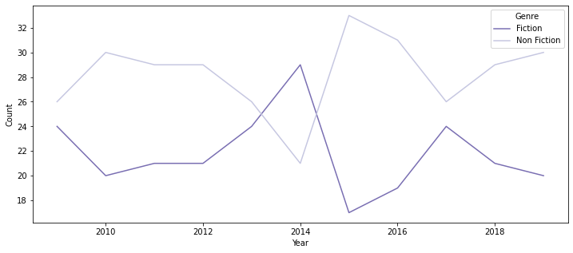
- 2014년을 제외하면 대체로 Non-Fiction이 더 많이 bestseller에 포함되는 경향
연도별 Rating, Review, Price 평균의 변화
- 연도별 장르별 User Rating 평균의 차이
plt.figure(figsize=(12, 5)) sns.lineplot(data=books_df, x='Year', y='User Rating', hue='Genre', palette='Purples');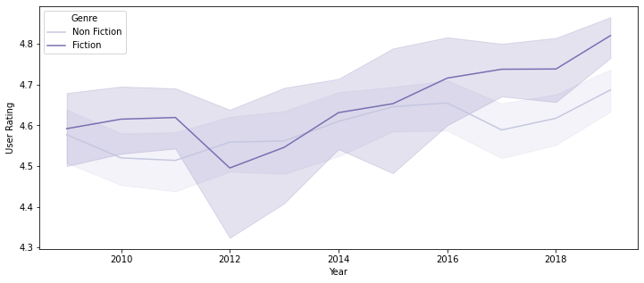
- 대체로 큰 차이가 없으나, 2017년 이후부터는 Fiction 장르의 평균 User Rating이 올라가면서 Non-Fiction 장르와 다소 차이가 벌어짐
- Fiction 장르가 대체로 User Rating의 편차가 큼 (보다 취향이 갈리는 장르이기 때문이라고 추정)
- 연도별 장르별 Reviews 평균의 차이
plt.figure(figsize=(12, 5)) sns.lineplot(data=books_df, x='Year', y='Reviews', hue='Genre', palette='Purples');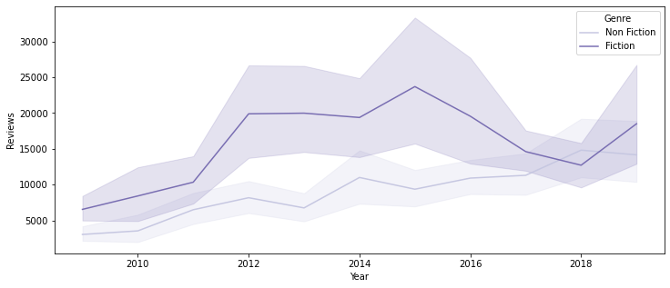
- 특히 2012 ~ 2016년 사이에 장르 간 평균 Review 수가 큰 차이를 보임
- 2017 ~ 2018년은 거의 평균의 차이가 없다고 봐도 무방하나, 2019년부터 다시 Fiction 장르의 평균 Review수가 증가하는 경향을 보여, 향후 추이를 지켜봐야 할 것으로 생각됨
- 연도별 장르별 Price 평균의 차이
plt.figure(figsize=(12, 5)) sns.lineplot(data=books_df, x='Year', y='Price', hue='Genre', palette='Purples');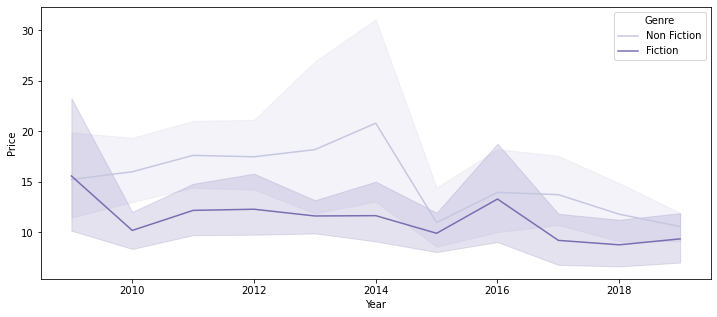
- 2010 ~ 2014년 사이의 bestseller들은 대체로 Non-Fiction이 Fiction보다 다소 높은 가격을 보이나, 2015년 이후에는 별 차이를 보이지 않음
- Non-Fiction 장르가 대체로 Price의 편차가 큼 (학술 도서 중에는 상당히 비싼 가격의 책들도 있기 때문이라고 추정)
Rating, Review, Price 상위권 도서 확인
: 전기간의 모든 bestselling 책 중, rating, review, price가 높은 책들이 어떤 것들인지 확인
- ※ 대체로 같은 책은 rating, review, price가 동일한 경우가 많으므로, 같은 책의 경우 가장 최근 record 하나만 남겨서 분석에 활용
# 연도순으로 내림차순 정렬
books_df_sorted = books_df.sort_values(by='Year', ascending=False)
# 중복된 행들 중 가장 위에 있는 행만 남기고 다 삭제
unique_books_df = books_df_sorted.drop_duplicates(subset=['Name', 'Author'], ignore_index=True)
unique_books_df.reset_index(drop=True, inplace=True)
print('books_df: ', len(books_df))
print('unique_books_df: ', len(unique_books_df))
books_df: 550
unique_books_df: 351
+) 평균 확인
unique_books_df.groupby(['Genre'])[['User Rating', 'Reviews', 'Price']].mean()
| Genre | User Rating | Reviews | Price |
|---|---|---|---|
| Fiction | 4.61563 | 13111.1 | 12.0938 |
| Non Fiction | 4.60366 | 7001.66 | 13.7016 |
+) 표준편차 확인
unique_books_df.groupby(['Genre'])[['User Rating', 'Reviews', 'Price']].std()
| Genre | User Rating | Reviews | Price |
|---|---|---|---|
| Fiction | 0.274388 | 13312.2 | 9.54815 |
| Non Fiction | 0.177815 | 7241.59 | 10.369 |
+) 변수간 상관관계 체크
- Rating이 높은 책이 Review도 높고, Price도 높은 등의 관계가 있는지 파악하기 위함
sns.heatmap(unique_books_df[['User Rating', 'Reviews', 'Price']].corr(), annot=True, cmap='Purples')
plt.yticks(rotation=0);
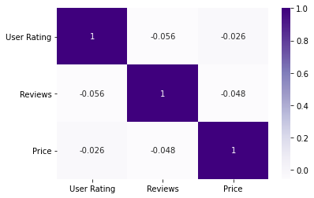
- 변수간 전혀 상관관계가 존재하지 않음
User Rating이 높은 책 확인
-
User Rating이 4.9(=최댓값)인 책들 중에 Fiction과 Non Fiction이 몇 권씩 포함되어 있는지 확인
plot = sns.countplot(data=unique_books_df[unique_books_df['User Rating'] == 4.9], x='Genre', palette='Purples_r', order=unique_books_df[unique_books_df['User Rating'] == 4.9].groupby(['Genre'])[['Name']].nunique().index) # data label을 각각의 bar 위에 추가 for p, label in zip(plot.patches, unique_books_df[unique_books_df['User Rating'] == 4.9].groupby(['Genre'])[['Name']].nunique()['Name']): plot.annotate(label, (p.get_x() + 0.375, p.get_height() + 1)) plt.ylim(0, 25);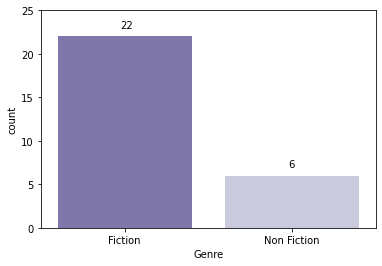
- 최고점인 4.9점을 받은 책 중에서는 약 78.6%가 Fiction
- Fiction이 장르 특성상 호불호가 더 명확하기 때문인 듯 (Fiction이 더 표준편차가 큼)
-
연도별로, User Rating이 4.9(=최댓값)인 책들이 몇 권씩 포함되어 있는지 확인
# unique_books_df 대신 books_df를 활용 plot = sns.countplot(data=books_df[books_df['User Rating'] == 4.9], x='Year', palette='Purples', order=books_df[books_df['User Rating'] == 4.9].groupby(['Year'])[['Name']].nunique().index) # data label을 각각의 bar 위에 추가 for p, label in zip(plot.patches, books_df[books_df['User Rating'] == 4.9].groupby(['Year'])[['Name']].nunique()['Name']): plot.annotate(label, (p.get_x() + 0.27, p.get_height() + 0.7)) plt.ylim(0, 15);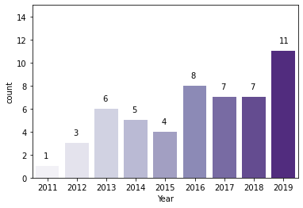
- 해가 지날수록 bestseller들의 평균 Rating이 높아지는 경향이 있어서 그런 듯
-
4.9점 Rating의 bestseller를 2권 이상 보유한 작가들을 확인
unique_books_df[unique_books_df['User Rating'] == 4.9].groupby(['Author'])[['Name']].count().sort_values(by='Name', ascending=False).head()Author Name Dav Pilkey 6 J. K. Rowling 4 Rush Limbaugh 2 Alice Schertle 1 Lin-Manuel Miranda 1 - 2권 이상의 bestseller가 4.9점을 받은 작가의 경우, 모두 시리즈물
Review가 많은 책 확인
## Review 가장 많은 Top 10 책 시각화
plt.figure(figsize=(6, 5))
sns.barplot(data=unique_books_df.sort_values(by='Reviews', ascending=False).head(10),
x='Reviews', y='Name', hue='Genre', palette='Purples_r');
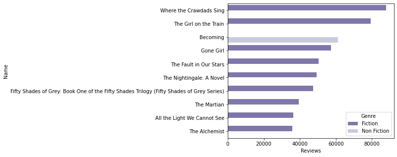
- Top 10 중 한 권만 Non-Fiction 장르
- 특히 2012 ~ 2016을 중심으로 Review가 높은 Fiction 장르 책이 많았기 때문인 듯
Price가 높은 책 확인
- Price가 가장 높은 Top 10 책 시각화
plt.figure(figsize=(6, 5)) sns.barplot(data=unique_books_df.sort_values(by='Price', ascending=False).head(10), x='Price', y='Name', hue='Genre', palette='Purples');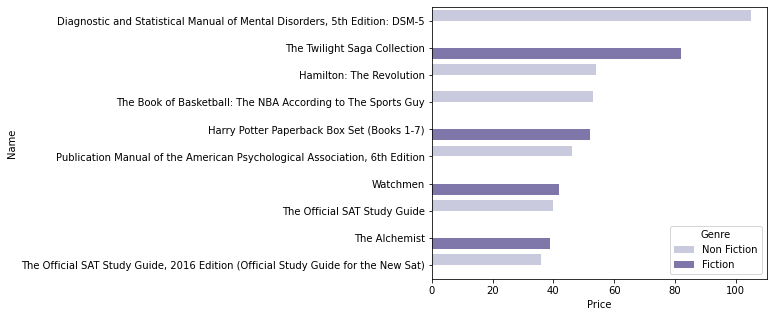
- 4권이 Fiction, 6권이 Non-Fiction
- 다만, Fiction 중 가장 가격이 높은 2개의 상품은 Twilight과 Harry Potter 시리즈 세트 판매 상품
-
Fiction 중 시리즈 세트 판매 상품들을 판별
condition1 = unique_books_df['Name'].str.contains('Saga Collection') condition2 = unique_books_df['Name'].str.contains('Boxed Set') condition3 = unique_books_df['Name'].str.contains('Box Set') condition4 = unique_books_df['Name'].str.contains('Fifty Shades of Grey / ') condition5 = unique_books_df['Name'].str.contains('A Game of Thrones /') unique_books_df[condition1 | condition2 | condition3 | condition4 | condition5]Name Author User Rating Reviews Price Year Genre 130 Harry Potter Paperback Box Set (Books 1-7) J. K. Rowling 4.8 13471 52 2016 Fiction 187 A Game of Thrones / A Clash of Kings / A Storm of Swords / A Feast of Crows / A Dance with Dragons George R. R. Martin 4.7 19735 30 2014 Fiction 212 Game of Thrones Boxed Set: A Game of Thrones/A Clash of Kings/A Storm of Swords/A Feast for Crows George R. R. Martin 4.6 5594 5 2013 Fiction 228 The Hunger Games Trilogy Boxed Set (1) Suzanne Collins 4.8 16949 30 2012 Fiction 251 Fifty Shades Trilogy (Fifty Shades of Grey / Fifty Shades Darker / Fifty Shades Freed) E L James 4.5 13964 32 2012 Fiction 300 Percy Jackson and the Olympians Paperback Boxed Set (Books 1-3) Rick Riordan 4.8 548 2 2010 Fiction 330 The Twilight Saga Collection Stephenie Meyer 4.7 3801 82 2009 Fiction - 시리즈 세트 판매 상품을 제외한 Price Top 10
temp = unique_books_df[~(condition1 | condition2 | condition3 | condition4 | condition5)] plt.figure(figsize=(6, 5)) sns.barplot(data=temp.sort_values(by='Price', ascending=False).head(10), x='Price', y='Name', hue='Genre', palette='Purples');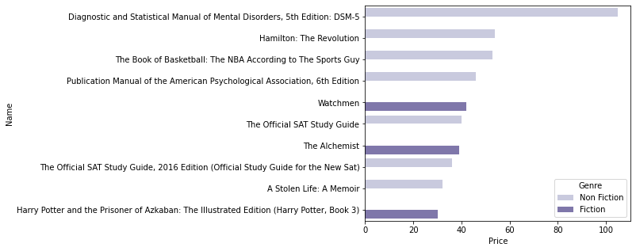
- Fiction 3권, Non-Fiction 7권
-
시리즈 세트 판매 상품을 제외한 Price 분포를 파악
sns.catplot(data=temp, x='Genre', y='Price', kind='box', palette='Purples');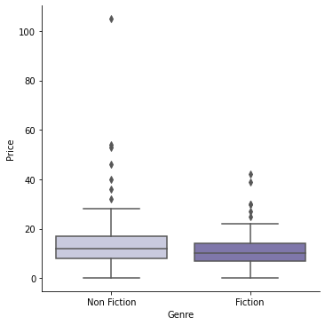
-
시리즈 세트 판매 상품을 제외한 장르별 평균 차이를 확인
sns.barplot(data=temp, x='Genre', y='Price', palette='Purples');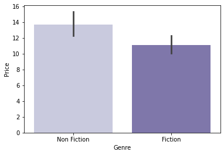
→ 독립표본 t-test로 평균의 차이가 유의미한지 확인
temp_fiction_df = temp[temp['Genre'] == 'Fiction'] temp_non_fiction_df = temp[temp['Genre'] == 'Non Fiction'] # Levene의 등분산 검정 lev_result = stats.levene(temp_fiction_df['Price'], temp_non_fiction_df['Price']) print('LeveneResult(F) : %.2f \np-value : %.3f' % (lev_result))LeveneResult(F) : 2.50 p-value : 0.115# 등분산인 독립표본 t-test 실행 t_result = stats.ttest_ind(temp_fiction_df['Price'], temp_non_fiction_df['Price'], equal_var=True) print('t statistic : %.2f \np-value : %.3f' % (t_result))t statistic : -2.67 p-value : 0.008- 소설 시리즈 세트 판매 상품을 제외하면, Non-Fiction의 가격이 대체로 다소 높은 편이라고 할 수 있을 듯